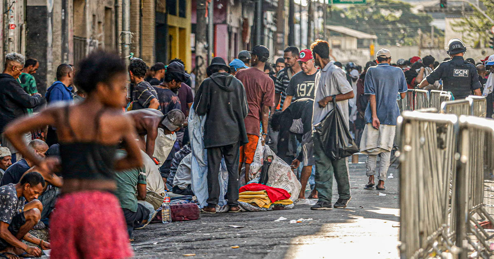
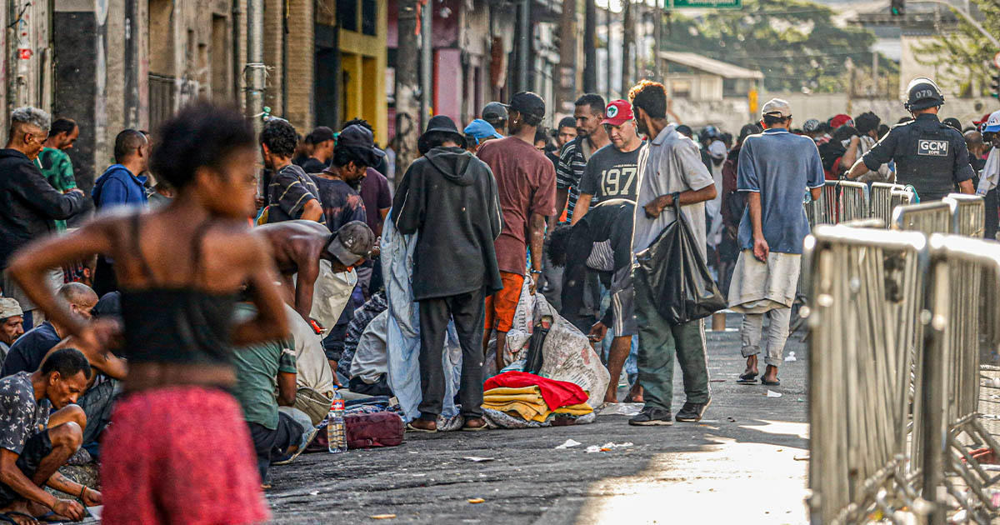

Perfil dos Usuários
- • Homens têm 4,4x mais chance de usar
- • 81% dos usuários precoces são homens
- • Comportamento das mulheres está mudando

"Porque dali no caso não tem mais volta e tua família está aí, está vivendo tu não atinge a ela, atinge ela só de sentimento."

 
